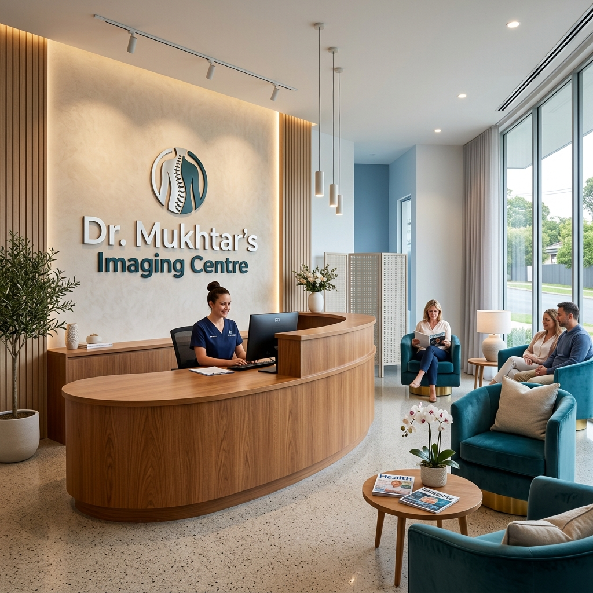

Dr. Mukhtar's
Imaging Centre | Est. 1990
Dr. Mukhtar's Imaging Centre proudly introduces Srinagar's first digital-era PET-CT scanner, the United Imaging uMI550. Experience the future of molecular diagnostics with shorter scan times, minimal radiation, and ultra-high resolution imaging.
Radiation Dose
Scan Duration
Effective Resolution

Sharper Small Lesion Checks
Why digital technology represents a revolutionary leap forward in safety, speed, and accuracy for patients in Jammu & Kashmir.
| Feature | Analog PET-CT | Digital PET-CT (uMI550) | Clinical Advantage |
|---|---|---|---|
| Radiation Dose | ~1 mCi / 10 kg | ~0.5 mCi / 10 kg | ≈50% Lower Radiation Exposure |
| Scan Time | 15 - 20 minutes | 5 - 6 minutes | 3x Faster Scan (Saves Critical Time) |
| Spatial Resolution | ~5 - 6 mm | ~2 - 3 mm | Sharper Images & Smaller Lesion Detection |
| Detector Type | Photomultiplier Tube (PMT) | Digital Silicon Photomultiplier (SiPM) | Significantly Higher Scan Sensitivity |
| Patient Comfort | Longer Scan Time | Shorter Scan Time | More Comfortable Patient Experience |
Direct photo-conversion for ultra-sharp signal clarity.
Time-of-Flight tech reduces image noise and enhances contrast.
Point Spread Function maintains spatial accuracy across the FOV.
Aids oncology detection with sub-1.5 mm voxel sensitivity.
Dr. Mukhtar's Imaging Centre offers a full suite of state-of-the-art diagnostic scans, each processed by leading local radiologists.
Advanced United Imaging uMI550 scanner offering low-dose, high-speed tumor scans, prostate checking (PSMA), and neuroendocrine imaging (DOTANOC).
Detailed magnetic resonance imaging for brain, spine, joints, and soft tissue diagnostics. Fully optimized to ensure maximum patient safety.
High-resolution Computed Tomography for rapid cross-sectional body checks, cardiac angiographies, and emergency internal scanning.
Comprehensive high-frequency sound wave diagnostic scans, including color doppler, vascular imaging, and detailed maternity diagnostics.
Low-dose diagnostic X-ray screening specifically calibrated for high-precision breast health and early detection of changes.
Precise scans to calculate bone mineral density (BMD), helping in early diagnosing of osteoporosis and estimating fracture risks.
Dr. Mukhtar's Clinic provides a comprehensive suite of clinical diagnostics, dental check-ups, and specialized laboratory tests:
Panoramic dental mapping for orthopedic and orthodontic diagnostics.
High-precision Hysterosalpingography for diagnostic fertility profiles.
Pulmonary volume screening and cardiovascular stress checks.
Comprehensive allergen panels, biochemistry, and blood profiles.

Digital PET-CT in J&K
Established in 1990, Dr. Mukhtar's Imaging Centre (also listed as Dr. Mukhtar's Clinic) has stood as a beacon of accurate diagnostic medicine in Srinagar for over 35 years. Situated conveniently opposite the Government Medical College in Karan Nagar, we house the region's most advanced radiological equipment under the supervision of expert consultants.
Our primary philosophy centers on patient comfort and diagnostic absolute reliability, ensuring that local physicians can guide treatment with absolute confidence.
Take a visual tour of Dr. Mukhtar's Imaging Centre, showcasing our state-of-the-art diagnostic equipment and patient care facility.


Important guidance on scheduling, safety protocols, and preparation guidelines for your upcoming scans.
PET-CT (Positron Emission Tomography - Computed Tomography) is a highly specialized molecular imaging method. By combining functional cellular info (PET) with structural details (CT), it maps metabolic activity in tissues. This is primarily used for identifying cancer stages, monitoring chemotherapy responses, and detecting neurological or cardiac conditions.
Our uMI550 scanner uses digital silicon photomultipliers (SiPM) instead of older analog tubes. This creates higher resolution, allowing us to spot tiny abnormal lesions (sub-1.5mm effective resolution). It also cuts the required radioactive tracer dose by half and speeds up scan times to just 5-6 minutes, making it safer and more comfortable.
Typically, you must fast (no food, tea, coffee, or sugary drinks, only plain water) for 4-6 hours before the scan. Avoid heavy exercise for 24 hours prior. If you are diabetic, notify our staff immediately so we can coordinate your insulin timing. For full detailed steps, please visit our dedicated Digital PET-CT page.
Yes. Because PET-CT involves the injection of a low-dose radioactive tracer (such as FDG), we require a prescription/referral from a registered specialist (like an oncologist, cardiologist, or physician) to ensure the scan is clinically justified and correctly targeted.
Most radiological scan results (MRI, CT, Ultrasound, DEXA) are compiled and reported within a few hours to a day. For Digital PET-CT, reports are detailed molecular studies requiring double-reads by our senior nuclear medicine specialists, and are typically ready within 24 to 48 hours.
Opposite Government Medical College,
Karan Nagar, Srinagar, J&K, 190010
Monday - Saturday: 09:00 AM - 06:00 PM
Sunday: Emergency CT/X-Ray on Call
Fill out the form below. Our booking team will check scanner availability and call you back to confirm your scheduling.